Ayo Mengamati!
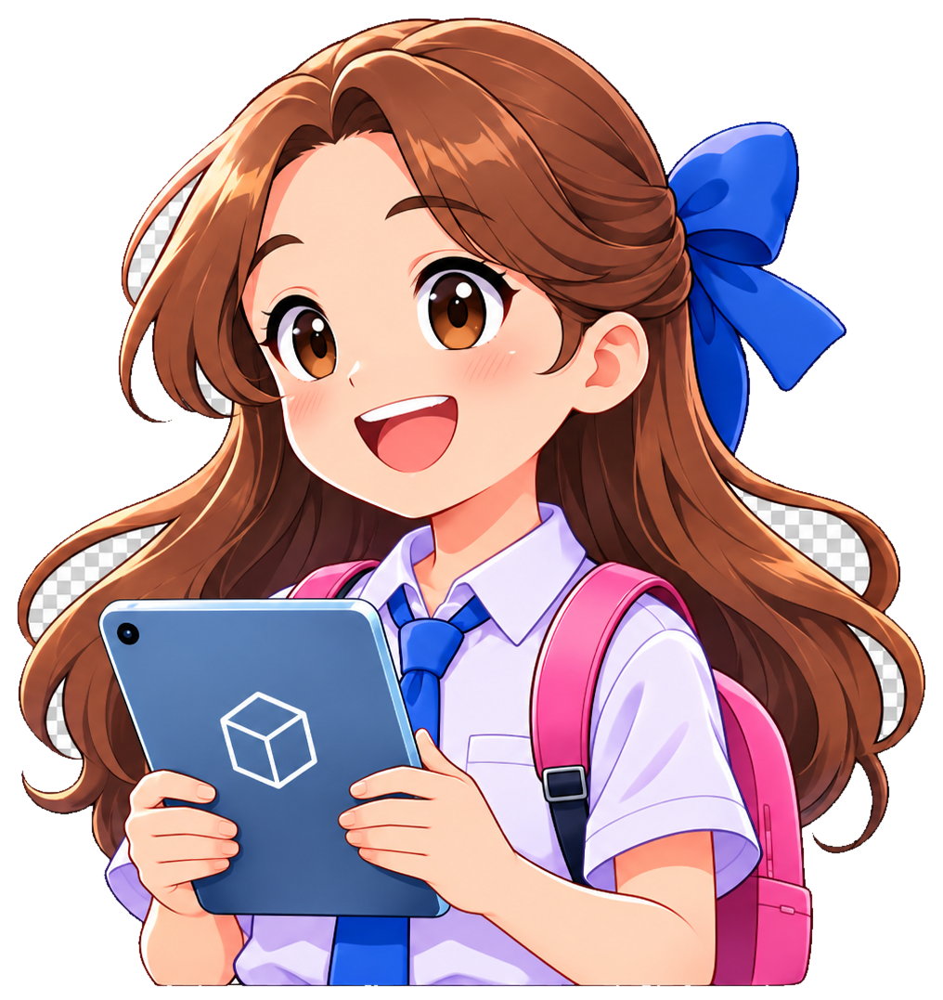
Pernahkah kamu melihat benda-benda di sekitarmu yang
berbentuk seperti ini?
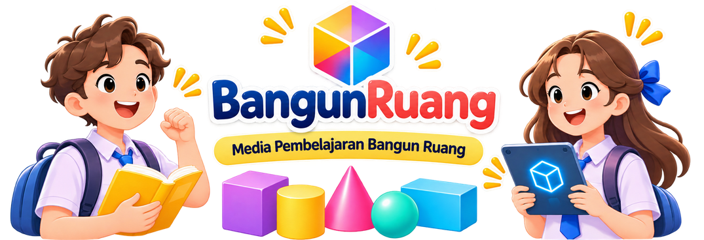
Materi tidak ditemukan. Coba kata kunci lain, ya!
Materi tidak ditemukan. Coba kata kunci lain, ya!

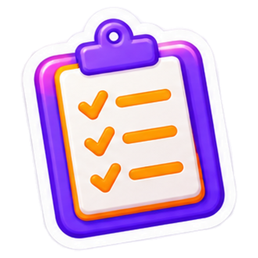
Setelah mempelajari materi ini, kamu diharapkan mampu:
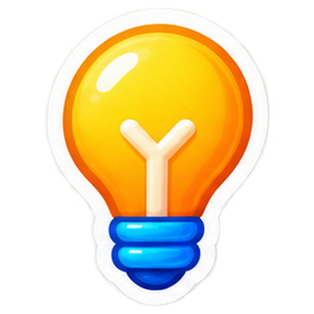
Perhatikan beberapa benda di bawah ini!
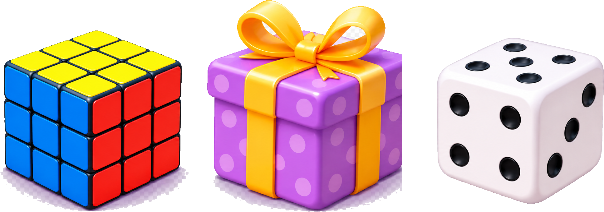
Pilih bagian kubus atau sentuh langsung model 3D-nya.
Mode AR memerlukan perangkat dan browser yang mendukung. Jika tidak tersedia, kamu tetap dapat mengeksplorasi model 3D di atas.
Amati bagaimana lima sisi prisma segitiga dapat terbuka, terpisah, lalu disusun kembali.
💡 Seret model untuk memutar. Tekan salah satu sisi untuk mengetahui namanya.
Amati bentuk kubus, ubah panjang sisinya, lalu temukan cara menghitung volumenya dan luas permukaannya.
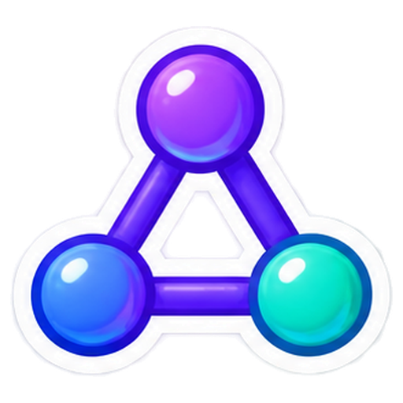
Atur sisi alas segitiga sama sisi dan panjang prisma.
Masukkan panjang prisma dalam sentimeter.
Setelah mempelajari materi ini, kamu diharapkan mampu:
Perhatikan beberapa benda di bawah ini!
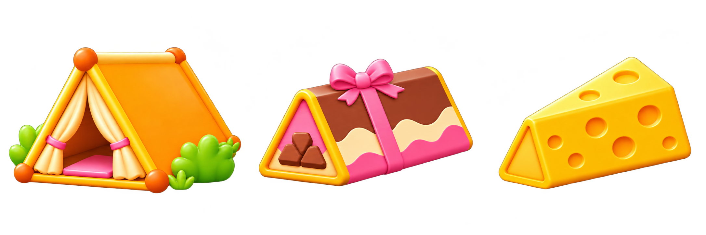
Pilih bagian prisma atau sentuh langsung model 3D-nya.
Mode AR memerlukan perangkat dan browser yang mendukung. Jika tidak tersedia, kamu tetap dapat mengeksplorasi model 3D di atas.
Amati bagaimana lima sisi prisma segitiga dapat terbuka, terpisah, lalu disusun kembali.
💡 Seret model untuk memutar. Tekan salah satu sisi untuk mengetahui namanya.
Amati bentuk prisma, ubah panjang sisinya, lalu temukan cara menghitung volumenya dan luas permukaannya.
Atur sisi alas segitiga sama sisi dan panjang prisma.
Masukkan panjang prisma dalam sentimeter.
Setelah mempelajari materi ini, kamu diharapkan mampu:
Perhatikan beberapa benda di bawah ini!
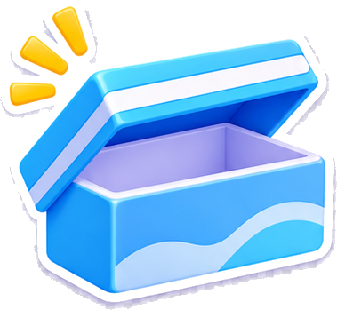
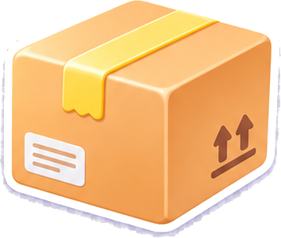
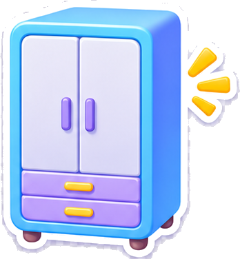
Pilih bagian balok atau sentuh langsung model 3D-nya.
Mode AR memerlukan perangkat dan browser yang mendukung. Jika tidak tersedia, kamu tetap dapat mengeksplorasi model 3D di atas.
Amati bagaimana lima sisi prisma segitiga dapat terbuka, terpisah, lalu disusun kembali.
💡 Seret model untuk memutar. Tekan salah satu sisi untuk mengetahui namanya.
Amati bentuk balok, ubah panjang, lebar, dan tingginya, lalu temukan cara menghitung volume serta luas permukaannya.
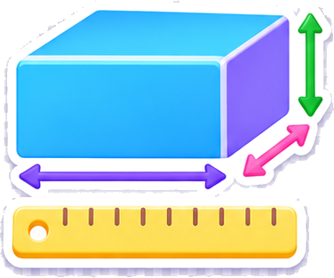
Geser pengatur atau masukkan ukuran sendiri.
 Kubus
Kubus

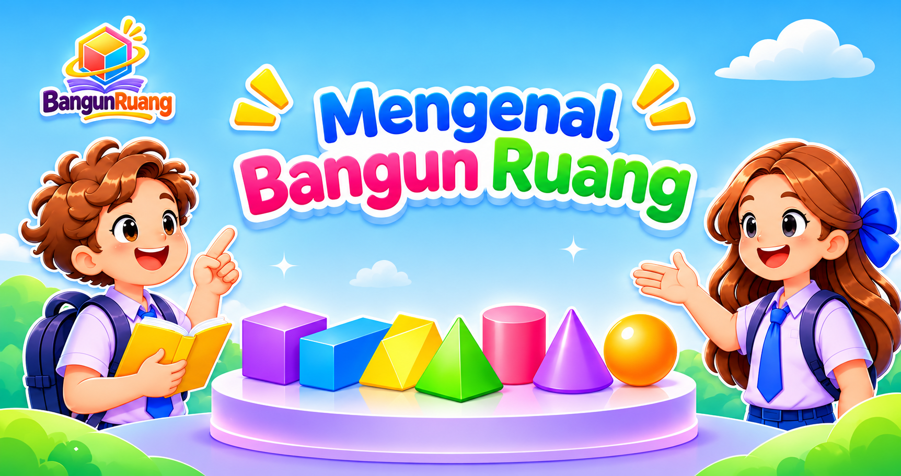
Video Pembelajaran Matematika • Kelas VII
Sumber: SayaBisaPilih video pada daftar di samping untuk mempelajari setiap bangun ruang. Video diputar langsung dari YouTube.

Kuis Bangun Ruang adalah tes interaktif untuk mengukur pemahamanmu setelah mempelajari materi. Kerjakan dengan teliti, dapatkan skor terbaik, dan lihat pembahasannya.
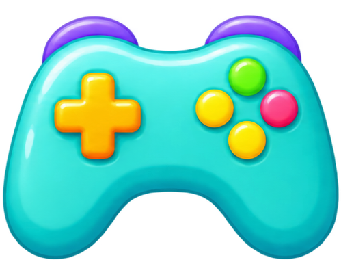
Uji pemahaman pada satu bangun ruang yang sudah kamu pelajari.
Gabungkan berbagai materi bangun ruang dalam satu tantangan.

Soal penalaran dan penerapan dengan tingkat kesulitan lebih tinggi.

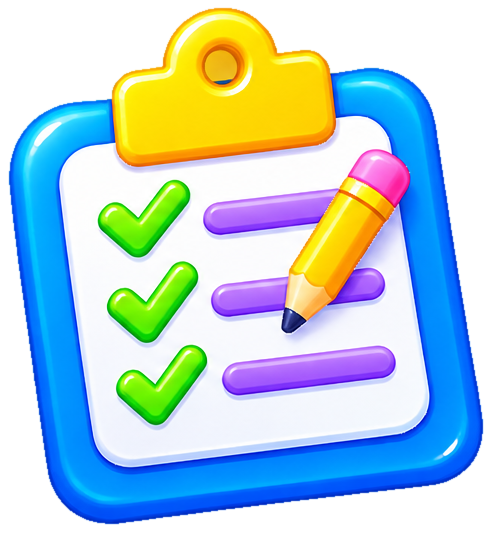
Pilih satu bangun ruang untuk mengukur pemahamanmu. Terdiri dari 5 soal.

 10 menitWaktu Pengerjaan
10 menitWaktu Pengerjaan
 5 soalJumlah Soal
5 soalJumlah Soal
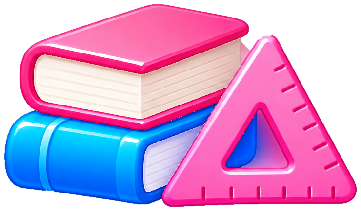
Pilih satu jawaban yang paling tepat, ya!
 Kenali bentuknya!
Kenali bentuknya!
 Semangat! Kamu pasti bisa menyelesaikannya.
Semangat! Kamu pasti bisa menyelesaikannya.
Timer kuis sedang dijeda. Tekan lanjutkan jika sudah siap.
Terus belajar dan tingkatkan hasilmu.
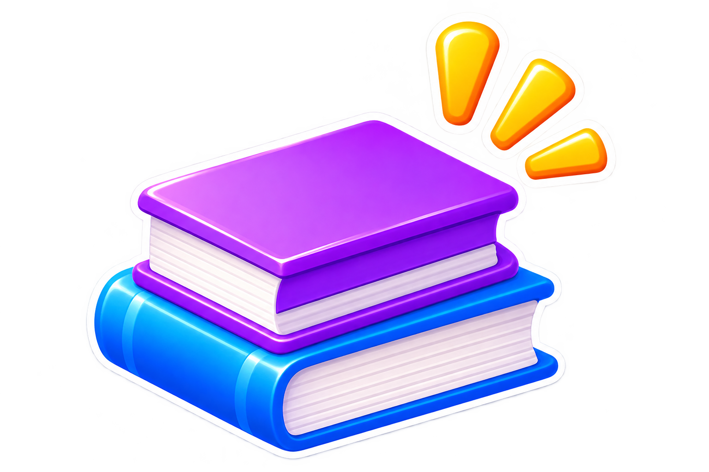
Ini adalah area latihan soal untuk memahami dan memperkuat konsep bangun ruang.
Setelah menjawab, kamu akan mendapatkan pembahasan dan penjelasan untuk setiap soal, agar kamu semakin paham.
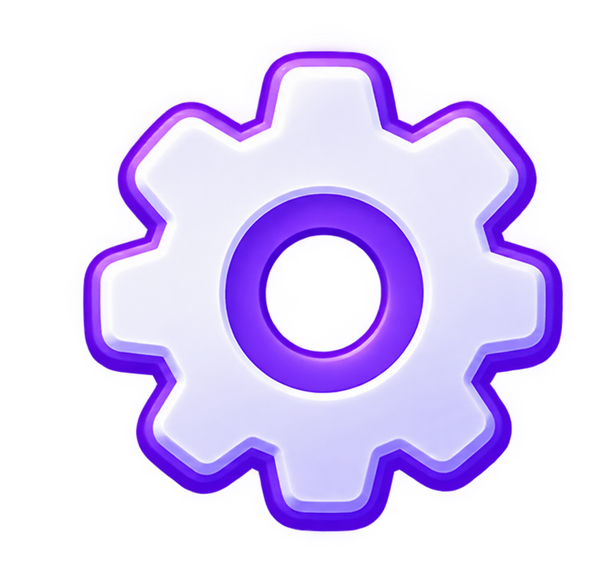
Atur Latihan1 materi dipilih · 5 soal tersedia
LATIHAN SELESAI
Terus berlatih agar semakin memahami bangun ruang.